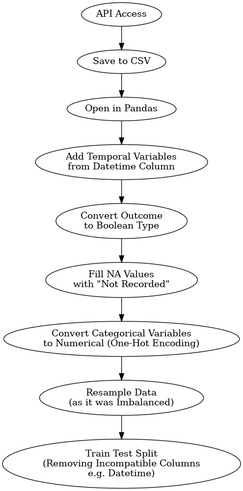
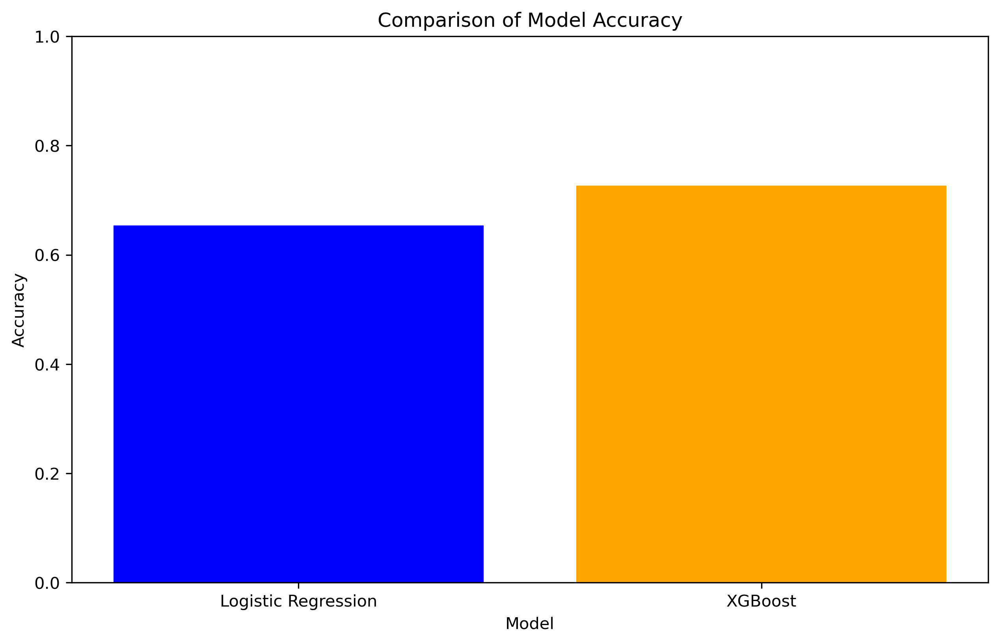
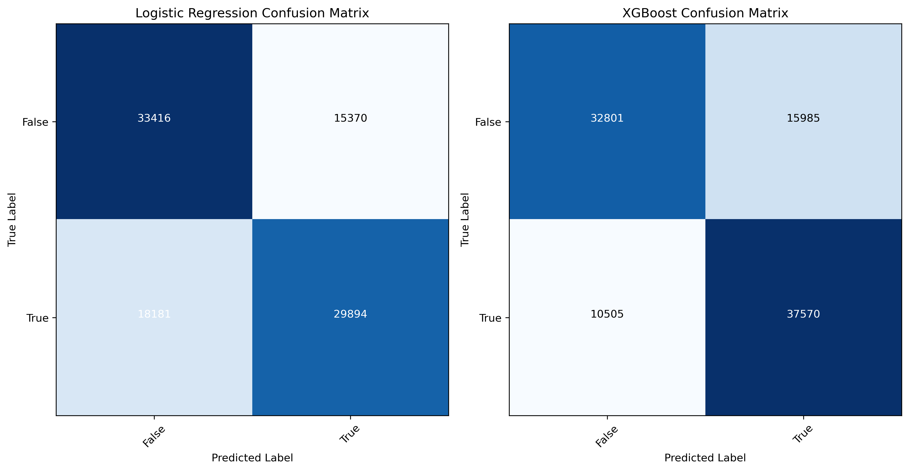
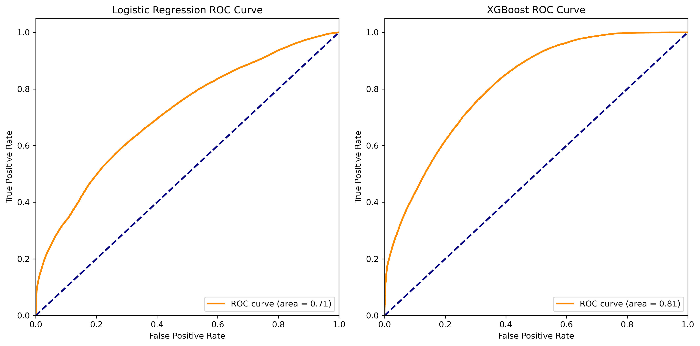

Classification
Overview
Classification is a concept in machine learning and data science, used to predict categorical outcomes based on input data. In this project, classification techniques are employed to determine the result of police SAS procedures in London. Specifically, the goal is to classify each stop as either resulting in a significant outcome, such as an arrest (true), or yielding no incriminating evidence (false). By analysing various features from the SAS data, including temporal, demographic, and spatial (location) variables, classification models can help predict the likelihood of a meaningful outcome, aiding in the evaluation and optimisation of law enforcement practices.
Data Pre Processing
The steps taken to prepare the data can be seen in Figure 1.

Methods
Two different classification models are used to predict the outcomes of police stop and search incidents: Logistic Regression and XGBoost. Here’s a brief introduction to each model:
Logistic Regression
x
XGBoost
y
Results
XGBoost appears to have a better accuracy than logistic regression.

This is supported by a confusion matrix, allowing identification of type 1 & 2 errors. In these matrices, type 1 errors (False Positives) are represented in the upper right cell of each matrix, while type 2 errors (False Negatives) are in the lower left cell. Type 1 error, also known as a false positive, occurs when the model incorrectly predicts a positive outcome for a stop and search operation, i.e., predicting that an illegal item will be found when it is not. Type 2 error, or false negative, occurs when the model incorrectly predicts a negative outcome, i.e., predicting that no illegal item will be found when it is.
These errors have significant implications for police operations and public trust. A high number of false positives (type 1 errors) could lead to unnecessary searches, potentially eroding public trust and wasting police resources. For instance, the Logistic Regression model has 15,370 false positives, whereas the XGBoost model has 15,985, indicating that XGBoost might lead to slightly more unnecessary searches compared to Logistic Regression. This increase in unnecessary searches could result in more civilian inconvenience and dissatisfaction, which is particularly sensitive in the context of police-community relations.
On the other hand, a high number of false negatives (type 2 errors) could mean that illegal items are missed during searches, which could have public safety implications. The Logistic Regression model shows 18,181 false negatives compared to only 10,505 for the XGBoost model. This substantial reduction in false negatives with the XGBoost model indicates a higher likelihood of detecting illegal items during stop and search operations, thus potentially enhancing public safety and the efficacy of police work.
Balancing these errors is crucial. The choice of model thus depends on the context-specific cost of these errors. For the London police, the XGBoost model’s lower false negative rate suggests it is more effective at identifying actual instances where illegal items are present, thereby potentially improving crime prevention and intervention outcomes. However, the slight increase in false positives must be managed carefully to avoid unnecessary intrusions and maintain public trust. Ultimately, the decision between these models requires a nuanced consideration of the trade-offs between operational efficiency, public safety, and community relations.

The ROC curves for the Logistic Regression and XGBoost models illustrate their performance in distinguishing between positive and negative outcomes in stop and search operations. The area under the curve (AUC) is a key metric in these plots, with the Logistic Regression model achieving an AUC of 0.71 and the XGBoost model achieving a higher AUC of 0.81. The higher AUC for the XGBoost model indicates a better overall performance in correctly identifying true positives while minimizing false positives compared to the Logistic Regression model. This demonstrates that the XGBoost model is more effective in differentiating between individuals who possess illegal items and those who do not, which can significantly impact the effectiveness and efficiency of stop and search operations.
